Введение в DataForge Introduction to DataForge
DataForge — это мощное, кроссплатформенное десктопное приложение с графическим интерфейсом, созданное специально для геймдизайнеров, сценаристов и разработчиков игр. Оно предназначено для структурирования, наполнения и поддержки статических игровых баз данных (таких как характеристики оружия, параметры монстров, ветки диалогов, квесты и баланс).
DataForge is a powerful, cross-platform desktop application with a graphical user interface tailored for game designers, writers, and developers. It is designed to structure, populate, and maintain static game databases (such as weapon stats, monster attributes, dialogue trees, quests, and balance values).
В отличие от громоздких систем управления базами данных (СУБД вроде MySQL/PostgreSQL) или простых таблиц Excel/Google Sheets, DataForge разделяет структуру данных (схему/шаблон) и непосредственное наполнение (элементы), при этом позволяя редактировать их параллельно в едином окне. Это исключает риск повреждения файлов разметки и ускоряет работу с балансом игры в разы.
Unlike bulky relational database management systems (SQL databases) or spreadsheet editors like Excel/Google Sheets, DataForge strictly separates data structures (schemas/templates) from actual data content (items), while allowing you to edit them side-by-side. This prevents syntax corruption and accelerates balance tuning tenfold.
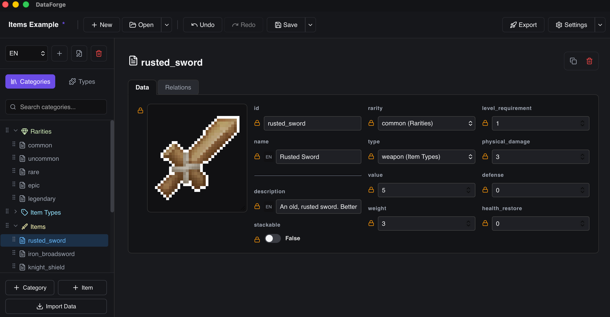
Базовые понятия Core Concepts
Архитектура DataForge построена на четырех основных элементах:
DataForge architecture centers around four main pillars:
- Категории (Categories):Categories: Описание структуры или типа данных. Это аналог класса в ООП или таблицы в реляционных базах. Например, категория "Персонажи". The blueprint structures or data types. Similar to classes in OOP or tables in SQL. For instance, the "Characters" category.
- Поля (Fields):Fields: Конкретные параметры, которыми обладают сущности в категории. Каждое поле имеет определенный тип (строка, число, ссылка и др.) и настройки валидации. Например: здоровье (Number), имя (String), иконка (Image). Specific properties belonging to entities in a category. Each field has a defined data type (string, number, reference, etc.) and validation rules. E.g., health (Number), name (String), avatar (Image).
- Макеты (Layouts):Layouts: Способ визуального отображения полей ввода на экране. Позволяет группировать поля в горизонтальные или вертикальные контейнеры, добавлять текстовые заголовки и разделители для удобной работы. Visual layout templates for fields on the screen. Allows organizing fields into vertical or horizontal tabs/containers, adding text headers, and dividers to improve workspace ergonomics.
- Элементы (Items):Items: Конечные строковые записи данных. Например, предмет "Световой меч" со всеми заполненными параметрами, унаследованными от категории "Оружие". The final item record entries. E.g., a "Lightsaber" item with specific attribute values configured, derived from the parent "Weapons" category.
Установка и Требования Installation & Requirements
DataForge распространяется в виде скомпилированных готовых пакетов и не требует установки сторонних библиотек, компиляторов или зависимостей. Все Tauri-модули поставляются "из коробки".
DataForge is distributed as self-contained precompiled binary files and does not require third-party libraries, runtime engines, or compilers. All native Tauri dependencies are packed out of the box.
Установка на macOS Installation on macOS
- Перейдите во вкладку Релизы и скачайте DMG-образ для вашей архитектуры процессора (Intel или Apple Silicon).
- Go to the Releases tab and download the appropriate DMG file matching your hardware architecture (Intel or Apple Silicon).
- Смонтируйте скачанный DMG-образ двойным кликом и перетащите иконку DataForge в папку Applications (Программы).
- Double-click the downloaded DMG archive to mount it, and drag-and-drop the DataForge icon into your Applications folder.
Установка на Windows Installation on Windows
- Скачайте установщик
.msiили портативную.zip-версию в разделе релизов. - Download either the standard
.msiinstaller or the portable.zippackage from the releases tab. - Запустите установщик
.msiдля стандартного развертывания или распакуйте.zip-архив в удобную папку для портативного использования. - Run the
.msiinstaller file to complete a wizard installation, or unzip the.ziparchive into a directory of your choice for portable execution.
Установка на Linux Installation on Linux
-
Для Debian/Ubuntu-дистрибутивов: скачайте
.deb-пакет и установите его командойsudo dpkg -i DataForge_*.deb. For Debian/Ubuntu systems: download the.debpack and install it via terminal:sudo dpkg -i DataForge_*.deb. -
Для RedHat/Fedora: скачайте и установите
.rpm-пакет. For RedHat/Fedora systems: download and install the.rpmpackage. -
Для портативного использования: скачайте
.AppImage-файл, сделайте его исполняемым (chmod +x DataForge.AppImage) и запустите. For portable usage: download the.AppImagefile, grant it executable permissions (chmod +x DataForge.AppImage), and execute.
Настройки Приложения App Settings
Панель настроек приложения открывается кнопкой ⚙ Settings в правой части верхнего хедера. Здесь настраиваются глобальные параметры — внешний вид, автосохранение, плагины и языки. Настройки сохраняются и остаются после перезапуска приложения.
The application settings panel is opened via the ⚙ Settings button in the top right header. Configure global appearance, autosave, plugins, and languages here. Settings are saved and persist across app restarts.
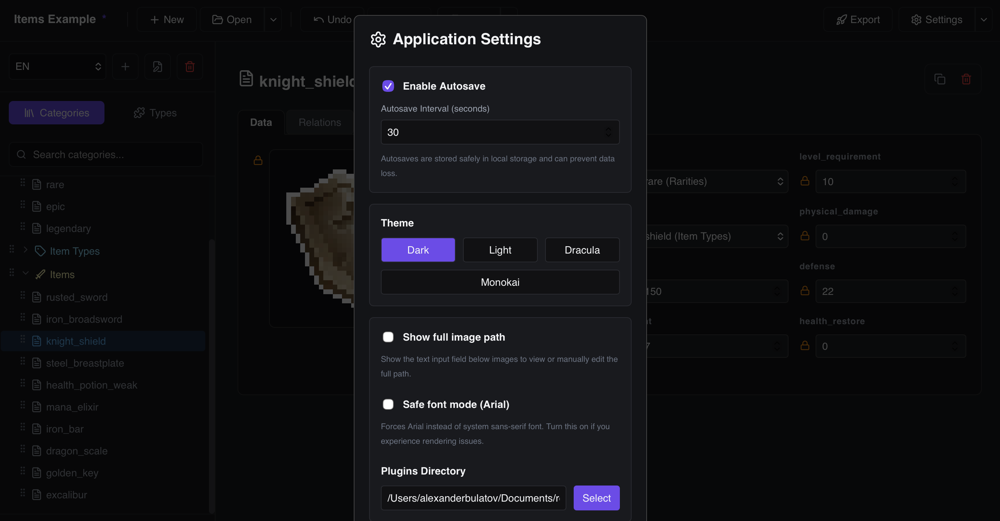
Название Проекта Project Name
Название проекта отображается в левой части верхнего хедера приложения жирным шрифтом. По умолчанию используется имя файла .json без расширения. Если проект ещё не сохранён — отображается «Untitled». Рядом с названием появляется символ * (звёздочка), если в проекте есть несохранённые изменения.
The project name is shown in bold in the left part of the top application header. By default it uses the .json filename without extension. If the project hasn't been saved yet, it displays «Untitled». An asterisk * appears next to the name when there are unsaved changes.
- Переименование двойным кликом:Rename by Double-Clicking: Дважды щёлкните по названию проекта в хедере — оно превратится в поле ввода. Введите новое имя и нажмите Enter (или кликните за пределами поля), чтобы сохранить. DataForge также переименует файл проекта на диске, если он уже был сохранён. Double-click the project name in the header — it turns into an editable text input. Type the new name and press Enter (or click outside the field) to confirm. DataForge will also rename the project file on disk if the file has already been saved.
Темы Оформления (Themes) Color Themes
DataForge поставляется с четырьмя встроенными темами. Выбранная тема немедленно применяется без перезапуска.
DataForge ships with four built-in color themes. The selected theme is applied immediately without restart.
| ТемаTheme | ОписаниеDescription |
|---|---|
| Dark | Тёмная тема по умолчанию. Нейтральные тёмно-серые тона, идеальна для длительной работы.Default dark theme. Neutral dark grays, ideal for extended work sessions. |
| Light | Светлая тема на светлом фоне. Хорошо читается при ярком внешнем освещении.Light-mode theme with white/gray background. Good readability in bright environments. |
| Dracula | Популярная тёмная тема с фиолетово-розовой акцентировкой. Вдохновлена редактором Dracula.Popular dark theme with purple-pink accents. Inspired by the Dracula editor palette. |
| Monokai | Тёплая тёмная тема с зелёно-жёлтыми акцентами. Вдохновлена цветовой схемой Monokai.Warm dark theme with green-yellow highlights. Inspired by the Monokai color scheme. |
Автосохранение (Autosave) Autosave
-
Включение / Выключение:Enable / Disable:
Флаг
Enable Autosaveвключает периодическое автоматическое сохранение проекта в фоне. Это защищает от потери несохранённых изменений при сбое или случайном закрытии окна. TheEnable Autosaveflag enables periodic automatic background saving of the project. This protects against losing unsaved changes on crash or accidental window close. -
Интервал (Autosave Interval):Interval (Autosave Interval):
Числовое поле задаёт частоту автосохранения в секундах (например, 30 — каждые 30 секунд). Значение по умолчанию:
30 секунд. Numeric field sets the autosave frequency in seconds (e.g. 30 = every 30 seconds). Default value:30 seconds.
Языки Проекта (Project Languages) Project Languages
В настройках проекта можно добавлять и удалять языковые коды (например, ru, en, de, zh). Список языков определяет, какие ключи перевода будут генерироваться для полей типа Localized.
In project settings you can add and remove language codes (e.g. ru, en, de, zh). The language list determines which translation keys are generated for Localized string fields.
-
Активный язык редактирования:Active Editing Language:
В верхней панели редактора данных имеется выпадающий список для выбора активного языка. При переключении языка все
Localized-поля в открытой карточке элемента автоматически переключаются на ввод текста для выбранного языка. Например, переключившись наru, вы вводите русские переводы; переключившись наen— английские. The data editor top bar contains a language selector dropdown. Switching the active language causes allLocalizedfields in the current item card to immediately switch to editing the text for that language. For example, switching toruenters Russian translations; switching toenenters English ones.
Директория Плагинов (Plugins Directory) Plugins Directory
В настройках указывается путь к папке на диске, в которой DataForge ищет файлы плагинов (.js). Приложение автоматически сканирует директорию при запуске и загружает все обнаруженные плагины. Также можно отключать конкретные плагины через список Disabled Plugins.
In settings, specify a folder path where DataForge scans for plugin files (.js). The app automatically scans the directory on startup and loads all discovered plugins. Individual plugins can also be disabled via the Disabled Plugins list.
Категории и Структура Categories & Schema
Проектирование любой базы данных в DataForge начинается с создания Категорий (Categories). Каждая категория представляет собой строгое описание схемы данных (структуры полей) для объектов одного типа. Это можно представить как класс в программировании или таблицу с колонками в классических базах данных.
Designing any database in DataForge starts with creating **Categories**. Each category represents a strict data schema definition (field structures) for items of a certain type. You can think of it as a class in object-oriented programming or a table with columns in database software.
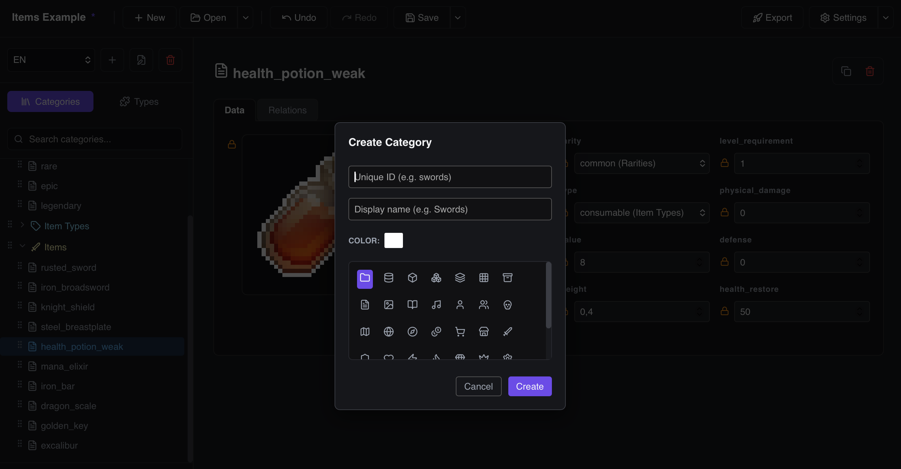
Создание Категории Creating a Category
В левой панели приложения рядом с заголовком "Categories" найдите кнопку +. В открывшемся модальном окне настройте следующие свойства:
In the left sidebar, click the + button next to the "Categories" header. In the popup creation modal, configure these options:
-
ID:ID:
Системный текстовый ключ категории (например,
melee_weapons). Используется как имя ключа при экспорте. Разрешены только латинские буквы, цифры и знаки подчеркивания. System-wide key for the category (e.g.,melee_weapons). Used as the key name during data exports. Only letters, numbers, and underscores are allowed. - Name:Name: Отображаемое в интерфейсе понятное имя (например, "Холодное оружие"). Human-readable title displayed in the editor (e.g., "Melee Weapons").
- Родительская категория (Parent Category):Parent Category: Выбор базовой категории для выстраивания иерархии наследования. Если не указана, категория считается корневой. Select a base category to establish an inheritance hierarchy. If left empty, this category acts as a root.
Редактирование параметров категории (Двойной Клик) Editing Category Details (Double-Click Action)
В DataForge вы можете быстро изменить метаданные категории прямо в рабочей области, не открывая дополнительные меню. Для этого перейдите в нужную категорию и совершите двойной клик левой кнопкой мыши по её заголовку в верхней части экрана. Откроется специальная панель редактирования:
In DataForge, you can quickly modify category settings on-the-fly without diving into separate menus. Select a category and double-click its header title at the top of the main viewport. This opens an inline customization bar:
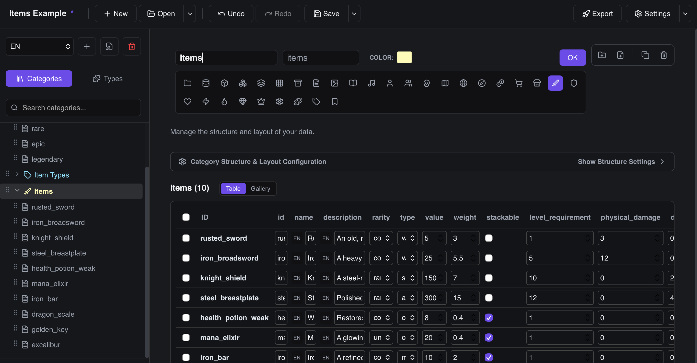
- Изменение Имени и ID:Renaming Name & ID: Вы можете отредактировать отображаемое имя (Title) и внутренний системный ID. Изменения ID автоматически применятся ко всем унаследованным связям. Change the displayed title or raw system ID. Updates to the ID will cascade down to any inherited links.
- Выбор цвета категории (Color Picker):Color Customization (Color Picker): С помощью интерактивной палитры выберите уникальный цвет для категории. Этим цветом будет окрашена иконка категории в дереве проводника, что упрощает визуальное ориентирование в больших проектах. Select a custom color via the interactive color picker. This color applies to the category icon in the sidebar explorer tree, making it easy to identify key folders in large databases.
- Выбор иконки (Icon List):Selecting Custom Icon (Icon List): Под полями ввода расположена лента предустановленных иконок (Folder, Database, Shield, Sword, Heart, Star, Sparkles и др.). Кликните по иконке, чтобы применить её к категории. Below the inputs, select from a collection of preset icons (Folder, Database, Shield, Sword, Heart, Star, Sparkles, and more). Click an icon to apply it instantly.
- Сохранение или Отмена:Save or Cancel: Нажмите клавишу Enter или зеленую кнопку "OK" для сохранения изменений. Нажмите клавишу Escape для отмены редактирования и возврата в исходное состояние. Панель также автоматически закроется с сохранением изменений, если кликнуть в любую другую часть рабочей области (фокус размоется). Press Enter or click the green "OK" button to apply modifications. Press Escape to cancel. The editor will also auto-save and close if you click anywhere else in the workspace (loss of focus).
Наследование полей и макетов Fields & Layouts Inheritance
Для предотвращения дублирования структуры данных DataForge использует иерархическое наследование:
To enforce data consistency and eliminate redundant schema creation, DataForge utilizes a cascading inheritance model:
-
Наследование полей (Fields Inheritance):Fields Inheritance:
Если активирован флаг
inheritFields, дочерняя категория автоматически получает все поля родителя. Унаследованные поля помечаются серым цветом в списке структуры полей. When theinheritFieldsflag is checked, the child category automatically receives all fields defined in the parent. Inherited fields are greyed out in the field schema editor. - Переопределение настроек (Overrides):Property Overrides: Если в дочерней категории требуется переопределить свойства поля (например, сделать его обязательным или изменить шаг чисел), просто создайте новое поле с тем же ID. Оно заменит родительские настройки для данной ветки категорий. If a child category needs to modify field rules (e.g., making it required or changing decimal limits), create a new field with the exact same ID. It overrides parent parameters for this branch.
- Резервный макет (Layout Fallback):Layout Fallback: Если у дочерней категории не настроена вкладка Layout, редактор автоматически отрисует карточки элементов, используя макет родительской категории. Это позволяет настроить форму один раз для корневой категории и использовать её для десятков дочерних. If a child category does not specify form templates in its **Layout** tab, the editor automatically draws its items using the parent category's layout. This lets you design a form once at root level and reuse it across dozens of children.
Иерархия Категорий и Наследование Полей Category Hierarchy & Field Inheritance
DataForge поддерживает многоуровневую иерархию категорий. Любая категория может быть вложена в другую, создавая дерево подкатегорий в левой панели.
DataForge supports multi-level category hierarchies. Any category can be nested under another, creating a tree of sub-categories in the left sidebar.
-
Создание подкатегории:Creating Subcategory:
Нажмите кнопку
+рядом с именем родительской категории в боковой панели. Появится диалог создания — новая категория автоматически будет вложена как дочерняя. Click the+button next to the parent category name in the sidebar. The creation dialog will appear — the new category is automatically set as a child. -
Наследование Полей (Inherit Fields):Inherit Fields:
По умолчанию дочерняя категория автоматически получает все поля родительской. Например, если категория "Оружие" содержит поля
damage,weight,rarity, то подкатегория "Двуручное Оружие" унаследует их все автоматически и может добавить только свои уникальные поля. ФлагInherit Fieldsв настройках дочерней категории позволяет отключить наследование при необходимости. By default, a child category automatically receives all fields from its parent. For example, if "Weapons" hasdamage,weight,rarityfields, the "Two-Handed Weapons" subcategory inherits them all automatically and only needs to add its own unique fields. TheInherit Fieldscheckbox in the child category settings allows disabling inheritance. - Перетаскивание категорий:Drag-and-Drop Reordering: Категории можно перетаскивать в боковой панели, изменяя их порядок и вложенность. Зажмите и потяните категорию за её имя — синяя полоса-индикатор покажет целевое положение. Categories can be drag-and-dropped in the sidebar to reorder or re-nest them. Grab and drag a category by its name — a blue drop indicator line shows the target position.
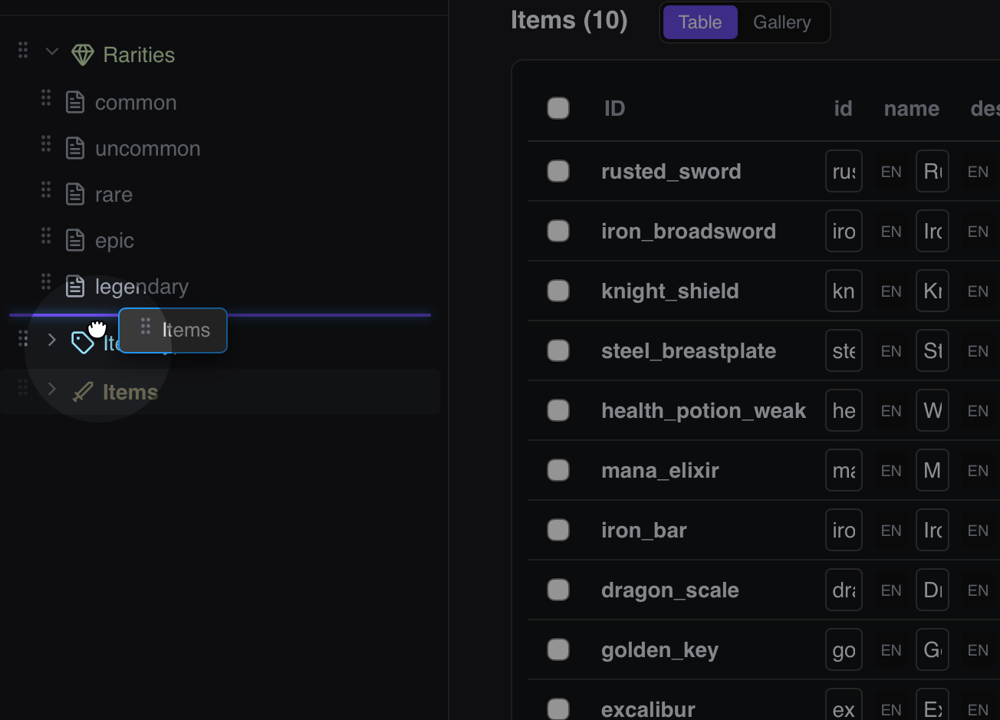
Аннотации и Настройки Экспорта Категории Category Export & Annotation Settings
В нижней части вкладки настроек каждой категории находится блок Export & Annotation Settings, который управляет тем, как данные категории сериализуются при экспорте:
At the bottom of each category's settings tab is the Export & Annotation Settings block, which controls how the category data is serialized on export:
-
Custom Annotation Class Name:Custom Annotation Class Name:
Позволяет задать кастомное имя класса Lua-аннотации (например,
WeaponItemвместо автоматически сгенерированного). Используется при экспорте с включённым флагом Annotations для генерации правильных---@class WeaponItemи---@fieldзаписей в Lua LSP-файле. Sets a custom Lua annotation class name (e.g.WeaponIteminstead of the auto-generated name). Used when exporting with Annotations enabled to produce correct---@class WeaponItemand---@fieldentries in the Lua LSP file. -
Export Type (Array / Map):Export Type (Array / Map):
Определяет формат корневого контейнера данных при экспорте этой категории:
Array— элементы экспортируются в виде массива ([{...}, {...}]);Map— элементы экспортируются в виде словаря, где ключами являются ID элементов ({"weapon_01": {...}, "weapon_02": {...}}). Determines the root container format when exporting this category:Array— items are serialized as an array ([{...}, {...}]);Map— items are serialized as a dictionary with item IDs as keys ({"weapon_01": {...}}).
Поля и Валидация Fields & Validation
Схема полей категории определяет набор атрибутов, которыми будут обладать элементы. Каждое поле имеет уникальный текстовый системный идентификатор (ID), отображаемое имя (Name), тип данных и набор параметров валидации.
The category fields schema defines the set of attributes that item records will possess. Each field has a unique text-based system ID, display label (Name), data type, and validation rules.
Для добавления нового поля откройте вкладку настроек структуры категории. В нижней части панели находится строка «Add field:», рядом с которой расположены кнопки-иконки для каждого типа поля — одна кнопка на тип (String, Number, Boolean, Color и т.д.). Нажмите нужную иконку — поле этого типа будет добавлено мгновенно с автоматически сгенерированным именем, а затем сразу откроется модальное окно его настроек для дальнейшей конфигурации.
To add a new field, open the category structure settings tab. At the bottom of the panel is a row labelled «Add field:» followed by a series of small icon buttons — one per field type (String, Number, Boolean, Color, etc.). Click the icon for the type you need — the field is instantly created with an auto-generated name, and its settings modal opens immediately for further configuration.
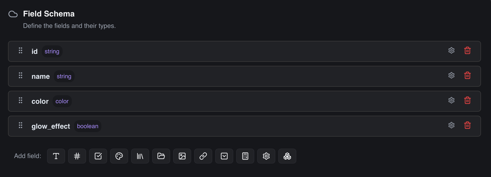
Доступные типы данных (12 встроенных типов): Available Data Types (12 Native Types):
| ТипType | ОписаниеDescription | Параметры и ПрименениеOptions & Use Cases |
|---|---|---|
String |
Текстовая строкаText string | Имена персонажей, описания, диалоги. Поддерживает локализацию.Character names, description text, dialogue transcripts. Supports localization. |
Number |
Число (целое или вещественное)Number (integer or float) | Урон, очки здоровья, вес, шанс выпадения предмета.Damage, hit points, weight, item drop rates. |
Boolean |
Логическое значение (Да/Нет)Boolean (Yes/No toggle) | Флаги: "is_quest_item" (является ли квестовым), "can_stack" (стакается ли).Flags: "is_quest_item" (whether quest element), "can_stack" (stackable). |
Color |
Выбор цвета (HEX/RGBA)Color Picker (HEX/RGBA) | Свечение эффектов частиц, цвет редкости предмета, цвета HUD.Particle glow light tint, item rarity frame color, HUD color tags. |
Reference |
Ссылка на элемент другой категорииReference to another item | Связи сущностей: персонаж ссылается на категорию оружия.Relations: a character profile pointing to a starter weapon item. |
Dropdown |
Выпадающий список опцийStatic dropdown selection | Фиксированные перечисления: типы брони (Light, Medium, Heavy).Fixed enumerations: armor weight class (Light, Medium, Heavy). |
Filepath |
Путь к файлу на дискеOS Filesystem path | Пути к внешним lua-скриптам ИИ, файлам звуков или шейдерам.Paths to external AI Lua scripts, audio sound files, or shaders. |
Image |
Путь к картинке с миниатюройImage path with thumbnail | Иконки инвентаря, портреты персонажей. См. раздел о растягивании.Inventory icons, character portraits. See scaling details below. |
Collection |
Массив значений одного типаDynamic array collection | Списки: лут-таблицы (массив References), массивы чисел (координаты).Lists: chest drop tables (array of References), floats array. |
Custom |
Сложная структура (Custom Type)Custom Type structure | Сложные вложенные структуры (например, Vector3, Stats).Nested struct variables (e.g. Vector3 coordinates, Stat blocks). |
Formula |
Вычисляемое математическое выражениеMathematical formula field | Динамический расчет: DPS (dps = damage * speed) на основе других ячеек.Calculates properties dynamically on-the-fly based on other cells. |
Atlas |
Связь со спрайт-листом (атласом)Atlas Sprite link | Выбор кадра анимации или спрайта из игровых атласов.Select frame coordinate animations from game texture atlases. |
Настройки валидации полей (Validation Config) Field Validation Rules (Validation Config)
Чтобы геймдизайнер не мог ввести некорректные данные, при добавлении поля настраиваются правила автоматической проверки:
To enforce data sanitization and prevent entry errors, configure these verification properties for each field:
- Required (Обязательное):Required: Поле не должно оставаться пустым при сохранении элемента. Если значение не введено, DataForge выведет ошибку валидации. The field cannot be empty. If left empty, DataForge highlights it with a validation alert.
- Unique (Уникальное):Unique: Значение поля должно быть уникальным среди всех элементов в этой категории. Полезно для уникальных ключей локализации или баз предметов. Ensures the value does not duplicate across other records in this category. Crucial for localization keys.
-
Regex Pattern (Регулярное выражение):Regex Pattern:
Текстовая строка проверяется на соответствие шаблону (например, маска артикула оружия:
^WEAPON_[A-Z0-9_]+$). Evaluates the text against a regex pattern (e.g. matching weapon item format:^WEAPON_[A-Z0-9_]+$). -
Localized (Локализация):Localized:
Помечает поле как поддерживающее мультиязычные значения. В базе данных DataForge создаст отдельные ключи переводов (например,
{"ru": "Привет", "en": "Hello"}). В инпуте будет отображаться языковой тег активного языка приложения (RU/EN). Flags the field as translating. DataForge handles language sub-keys in the database output (e.g.,{"ru": "Привет", "en": "Hello"}). The input displays the active language tag code (RU/EN). -
Multiline (Многострочное):Multiline:
Вместо стандартной однострочной ячейки ввода рендерится текстовое поле
textarea. Идеально для описаний предметов и реплик диалогов. Replaces the single line input cell with a large multiline textarea box. Ideal for dialogue nodes or long logs. - Reflects Name (Отражать имя):Reflects Name: При включении этого флага значение поля будет автоматически использоваться в боковом меню в качестве имени элемента (вместо его технического ID). Например, если ввести имя "Лук Молний" в поле `name`, то элемент в дереве сменит ID `bow_t3` на "Лук Молний". Uses this field's value as the item's label in the sidebar explorer tree (instead of displaying its raw technical ID). For example, typing "Lightning Bow" in this field will rename `bow_t3` to "Lightning Bow" in the tree view.
-
Границы чисел (Min, Max, Step):Numeric Bounds (Min, Max, Step):
Для типа
Numberпозволяет задать минимальное и максимальное значение, а также шаг приращения (например,Step: 0.1для плавных процентов урона илиStep: 1для очков характеристик). Set value boundaries and step increments for theNumbertype (e.g.,Step: 0.1for float percentage rates orStep: 1for static integer levels).
Продвинутые типы полей (Formula, Custom, Collections) Advanced Fields (Formula, Custom, Collections)
-
Вычисляемые формулы (Formula):Calculated Formulas (Formula):
Поля типа
Formulaпозволяют вычислять математические выражения на лету. В настройках поля вы задаете формулу (например,damage * attack_speed). DataForge автоматически подставит значения соответствующих полей текущего элемента и произведет вычисления с использованием безопасного песочного интерпретатора. Результат отображается в карточке элемента в режиме "только для чтения". Fields of typeFormulaevaluate mathematical expressions on-the-fly. In the field options, define a string (e.g.,damage * attack_speed). DataForge fetches the sibling field values of the item, runs safe evaluation, and displays the read-only calculated result in the card. -
Кастомные структуры (Custom Type):Struct templates (Custom Type):
Если вам нужно хранить вложенные структуры (например, параметры точки
x, y, zили блок характеристик), вы можете создать шаблон структуры в глобальной вкладке настроек **Custom Types**. После этого добавьте поле типаCustomи укажите созданный тип в выпадающем спискеcustomTypeId. В карточках элементов сгенерируется аккуратная вложенная группа полей. To manage nested attributes (such as 3D coordinatesx, y, zor item stats), define a schema template under the global **Custom Types** settings tab. Then, add a field of typeCustomand select the template in thecustomTypeIdoption. This renders a nested input sub-form inside items. -
Фиксированные коллекции (Fixed-Size Collections):Fixed-Size Collections:
Для полей типа
Collectionдоступен флагFixed size. Он позволяет жестко ограничить количество элементов в массиве (параметрfixedSizeLength). Это удобно для хранения статичных наборов данных, таких как координаты 2D-векторов (ровно 2 числа) или RGB-цвета (ровно 3 числа), отключая кнопки добавления и удаления ячеек. ForCollectionfields, check theFixed sizebox to lock the array size (set byfixedSizeLength). This is ideal for static arrays like 2D vectors (exactly 2 numbers) or RGB floats (exactly 3 values), disabling manual append/delete buttons.
Работа с Изображениями и Растягивание (Image Scaling & Resizing) Working with Images (Image Scaling & Resizing)
Для полей типа Image в DataForge встроен удобный интерактивный механизм предварительного просмотра, который позволяет геймдизайнеру гибко настраивать отображение графических ресурсов прямо в карточке элемента:
For Image fields, DataForge includes an interactive preview container that lets game designers customize how graphic assets are displayed directly inside the item card:
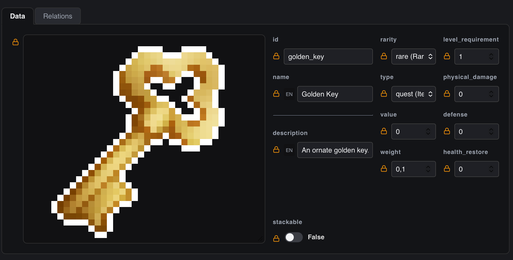
- Растягивание и изменение размера превью (Resize Handle):Resizing & Stretching Preview (Resize Handle): При наведении курсора мыши на правый нижний угол рамки изображения в карточке элемента появляется стандартный двухсторонний маркер изменения размера. Зажмите левую кнопку мыши и потяните, чтобы свободно растянуть или уменьшить контейнер превью. Заданный размер сохраняется и остаётся после перезапуска приложения. Hovering your mouse over the bottom-right corner of the image preview container reveals a resize handle. Click and drag it to freely stretch or shrink the preview frame. The chosen size is saved and persists across app restarts.
-
Заполнение контейнера (Fit Image):Fit Image to Container:
В настройках поля доступен флаг
Fit image to container. При его включении изображение автоматически масштабируется, чтобы заполнить контейнер превью с сохранением пропорций, вместо отображения в оригинальном размере. In the field settings, toggleFit image to container. When enabled, the image auto-scales to fill the preview frame while preserving its aspect ratio, instead of rendering at its natural size. -
Отображение пиксель-арта (Pixel Art Rendering):Pixel Art Rendering:
Флаг
Pixel art renderingвключает режим масштабирования без размытия. Это важно для разработчиков 2D пиксельных игр — спрайты и иконки остаются чёткими и пикселизированными даже при сильном увеличении контейнера. ThePixel art renderingcheckbox disables image smoothing on scaling. Essential for pixel art games — sprites and icons remain crisp and sharp when the preview is stretched, without blur. -
Полнотекстовый путь (Show full path):Show Full Image Path:
В общих настройках проекта доступен переключатель
Show full image path. При его активации прямо под областью предпросмотра изображения рендерится текстовое поле ввода. Это позволяет просмотреть точный путь к картинке на диске и отредактировать его вручную (например, прописать относительный путь к ресурсу). TogglingShow full image pathin the project settings renders an editable text input directly underneath the image card box. This lets designers inspect or manually edit the relative path on disk (e.g. changing resource subfolders).
Связи между Категориями (Relations / References) Category Relationships (Relations & References)
Поле типа Reference позволяет создавать ссылки между записями из разных таблиц:
The Reference field type allows setting up links between database records belonging to different tables:
-
Создание связи:Establishing Link:
В настройках поля выберите целевую категорию (Target Category). Например, для поля
starter_weaponкатегории "Персонажи" выберите цель "Оружие". In the field options, select the Target Category. E.g., for thestarter_weaponfield of "Characters", select "Weapons". - Интерфейс:User Interface: В карточке элемента вместо ручного ввода ID появится удобный выпадающий список. DataForge просканирует целевую категорию и покажет все доступные элементы с их именами. When filling data, standard text cells are replaced by a search-friendly dropdown. DataForge fetches and lists items of the target category.
-
Связи Many-to-Many:Many-to-Many Links:
Если скомбинировать тип
CollectionиReference, то получится массив ссылок. Например, полеmerchant_inventoryможет содержать список предметов, продаваемых торговцем (массив ссылок на категорию предметов). CombiningCollectionandReferencetypes creates an array of references. For example, amerchant_inventoryfield holds a list of items sold by a shopkeeper.
Дополнительные Опции Поля Additional Field Options
-
Скрытие имени поля в карточке (Hide Name In Card):Hide Name In Card:
Флаг
Hide name in cardубирает лейбл с именем поля из отображения в карточке элемента. Полезно для полей-изображений или разделителей, где заголовок только мешает. TheHide name in cardflag removes the field label from the item card display. Useful for image fields or decorative separators where the label title only adds visual clutter. -
Описание Поля (Field Description):Field Description:
Текстовое поле
Descriptionв настройках поля предназначено для комментариев и аннотаций. При экспорте в формате Lua текст описания будет добавлен как---@fieldLSP-комментарий непосредственно над объявлением поля — это позволяет получить автодополнение и документацию прямо в редакторе кода. TheDescriptiontext input in field settings is for inline documentation. When exporting to Lua format, the description is injected as a---@fieldLSP annotation comment above the field declaration — providing code completion and hover docs directly in the code editor. -
Перетаскивание полей для изменения порядка:Drag-to-Reorder Fields:
В списке полей категории каждое поле имеет иконку-ручку (
⠿) в левой части строки. Зажмите её мышью и перетащите поле на новую позицию. Синяя линия-индикатор покажет место вставки. Порядок полей определяет как порядок столбцов в режиме таблицы, так и порядок полей по умолчанию в карточке элемента. In the category field list, each field has a grip handle icon (⠿) on the left. Click-drag it to reorder the field. A blue insertion line indicator shows the drop target. Field order defines both the column order in table mode and the default field order in item cards.
Система Замков и Наследование Значений Value Locks System & Inheritance
Одной из самых мощных фич DataForge является система интерактивных Замков (Padlock System). Она решает проблему быстрого обновления баланса во всей базе данных.
One of the hallmark capabilities of DataForge is the interactive **Padlock System**. It resolves the problem of applying rapid balance adjustments across a massive database.
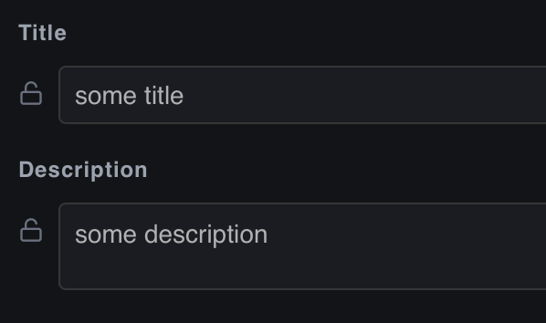
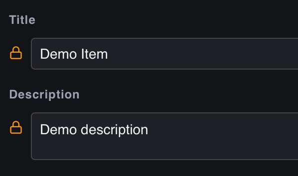
Значения по умолчанию (Default Values) Schema Defaults (Default Values)
На уровне настройки категории во вкладке Default Values вы можете задать значения по умолчанию для каждого поля. Например, для оружия установить базовую прочность в 100 единиц, а шанс крита в 0.05.
In the category structure settings under the Default Values tab, you can set default variables for every field. E.g., setting default weapon durability to 100 and crit chance to 0.05.
Состояние замков и наследование Padlock States & Propagation
В карточке редактирования элемента справа от каждого поля отображается маленькая иконка замка:
In the item editor card, a padlock status icon is displayed at the right edge of each input field:
- Открытый замок (Unlocked / Наследуется):Unlocked (Inherited): По умолчанию при создании нового элемента все его поля имеют открытый замок. Это означает, что поле **динамически наследует** дефолтное значение из категории. Если вы измените дефолт в структуре категории (например, поменяете прочность со 100 на 120), то значение моментально обновится во всех элементах категории, у которых замок открыт. By default, all fields in a newly created item start in an unlocked state. This indicates the field **dynamically inherits** the default schema value. If you edit category defaults (e.g., changing durability from 100 to 120), all items with an unlocked padlock instantly sync to the new value.
- Закрытый замок (Locked / Переопределено):Locked (Overridden): Как только вы вручную редактируете значение поля в элементе, замок **автоматически закрывается**. Это изолирует значение элемента. Любые глобальные изменения дефолтных настроек на уровне категории больше не коснутся этого поля в данном элементе. As soon as you manually type a new value into an item field, the padlock **automatically clicks shut**. This isolates the local parameter, preventing future category-level schema default updates from overwriting your custom edit.
- Сброс переопределения (Reset):Resetting Overrides: Вы можете в любой момент сбросить переопределенное значение обратно к дефолтному. Для этого просто **кликните по закрытому замку**. Он откроется, затрет локальные правки и вернет значение по умолчанию из категории, возобновив динамическую связь. You can revert any local changes back to base values. Simply **click the closed padlock icon**. It snaps open, discards the override, restores the category default value, and resumes dynamic inheritance.
Конструирование Форм и Макеты Input Form Layouts
Когда у категории много полей (например, 20-30 характеристик для сложного монстра), редактировать их одним длинным списком крайне неудобно. DataForge предлагает мощное решение — интерактивный конструктор форм Layout Tree Editor (вкладка Layout в настройках категории).
When a category has dozens of properties (e.g., 20-30 attributes for a complex raid boss), editing them in a single flat list becomes highly inefficient. DataForge resolves this via a built-in visual form designer — the Layout Tree Editor (available under the Layout tab of category settings).
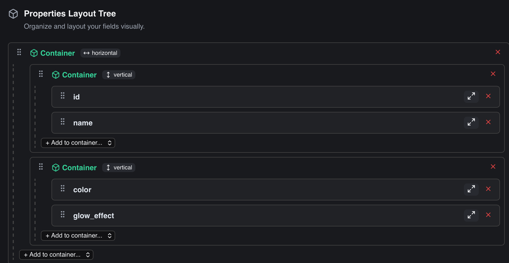
Вы конструируете интерфейс ввода данных с помощью иерархического дерева элементов разметки. Все изменения макета мгновенно отображаются в карточках элементов.
You build the data entry form interface by composing a hierarchical tree of layout elements. The changes propagate immediately to the editing cards of all items.
Доступные элементы разметки (Layout Elements): Available Layout Elements:
- Контейнеры (Containers):Containers: Структурные блоки, объединяющие несколько полей. Вы можете выбрать тип контейнера: Horizontal (поля расположатся в ряд в виде колонок) или Vertical (поля выстроятся друг под другом). Контейнеры можно вкладывать друг в друга для создания сложных сеток. Structural nodes grouping multiple fields together. You can toggle container flow: Horizontal (fields align side-by-side as columns) or Vertical (fields stack on top of each other). Containers can be nested to create grid layouts.
- Заголовки (Headers):Headers: Текстовые разделители для обозначения логических блоков формы (например: «Базовые характеристики», «Настройки ИИ»). Text labels that introduce logical sections of the form (e.g., "Combat Attributes", "AI Coefficients").
- Разделители (Separators):Separators: Простые горизонтальные линии для визуального отделения одной группы параметров от другой. Simple horizontal rule lines to separate distinct input blocks.
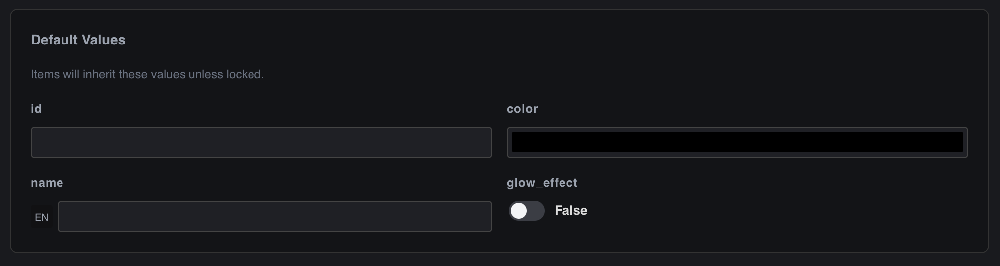
Дополнительные опции полей в макете Advanced Field Presentation Options
Каждое поле, помещенное в дерево макета, имеет индивидуальные флаги отображения:
Each field placed in the layout tree has separate presentation controls:
- Expand (Растянуть):Expand: Заставляет поле занять всю доступную ширину. Особенно полезно для полей типа `Collection` или длинных текстовых строк, находящихся внутри горизонтальных контейнеров. Forces the field to stretch and fill all available horizontal space. Especially useful for arrays or long string textareas within horizontal rows.
-
Embed Reference (Встроить связь):Embed Reference:
Уникальная опция для полей типа
Reference. При её включении вместо обычного выпадающего списка выбора ID элемента **прямо внутрь формы встраиваются поля редактирования связанного элемента**. Это позволяет геймдизайнеру настраивать вложенные сущности "in-place" без необходимости переходить в другие вкладки или категории. A unique feature forReferencefields. Enabling this checkbox hides the standard ID dropdown selector and instead **embeds the edit fields of the referenced item directly into the parent card**. This enables editing nested relational trees in-place without context switching.
Управление Элементами Managing Items
После настройки структуры категорий и полей вы приступаете к созданию контента — наполнению базы данных Элементами (Items).
Once you have established categories, fields, and layouts, you can start building content by populating the database with **Items**.
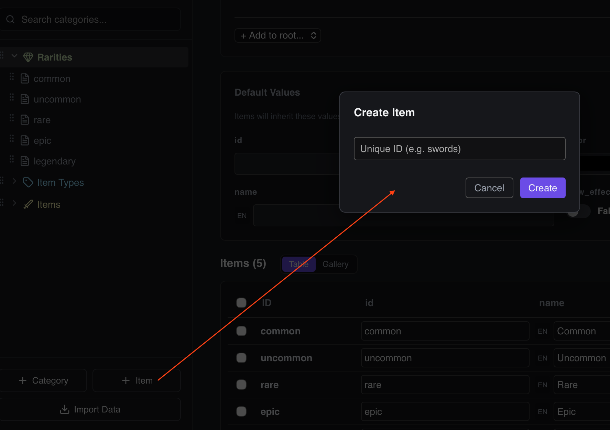
Создание Элемента Creating an Item
Выберите категорию в левой панели, а затем нажмите круглую кнопку + в верхней части списка элементов. Введите уникальный ID элемента (технический ключ, например, iron_ore_01). Справа откроется форма редактирования, сгенерированная по правилам макета Layout.
Select a category in the sidebar explorer tree, and click the circular + button under the items header list. Specify a unique item ID (e.g., iron_ore_01). The right editor viewport will load the custom layout form.
Редактирование ID элемента (Двойной клик) Renaming Item ID (Double-Click Action)
Если вам необходимо переименовать идентификатор (ID) уже созданного элемента, нет необходимости удалять его и создавать заново. Совершите двойной клик левой кнопкой мыши по названию элемента (ID) в самом верху правой панели редактирования. Заголовок превратится в поле ввода.
If you need to rename the unique identifier (ID) of an existing item, you don't have to delete and recreate the record. Simply double-click the item title ID at the top of the right editor viewport. The header turns into a text box.
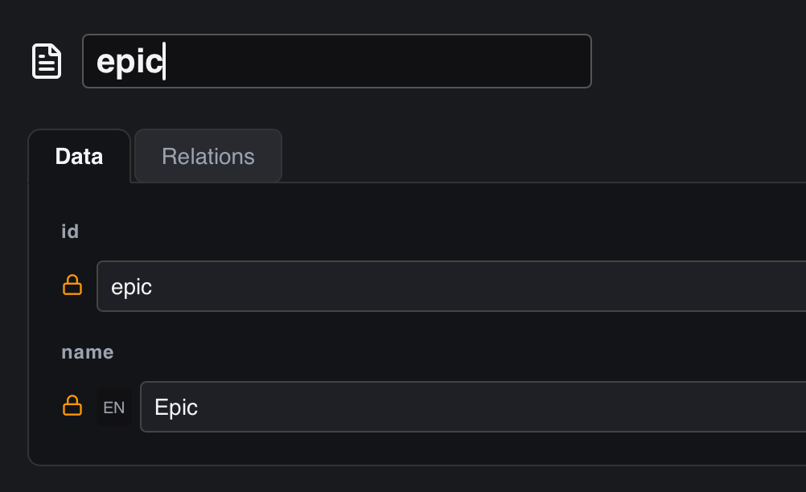
Введите новый ID и нажмите Enter (или кликните в любое место вне поля ввода) для сохранения. Нажмите Escape, чтобы отменить переименование. DataForge автоматически проверит уникальность нового ID во всей категории и выведет предупреждение, если ID занят.
Type the new key and press Enter (or click outside/blur focus) to save. Press Escape to cancel. DataForge automatically validates that the new ID is unique inside the category, throwing an error if a conflict arises.
Валидация при вводе и уведомления об ошибках Validation Warnings & Conflict Alerts
DataForge производит проверку вводимых данных на лету в соответствии с правилами схемы категории:
DataForge runs background syntax checks on the fly as you edit values inside the form fields:
- Если поле помечено как Required и оставлено пустым, граница поля подсветится красным цветом с надписью «Required field». If a field is marked as Required and left blank, it glows red with a "Required field" label.
- Если поле числовое, а введенное значение выходит за рамки Min/Max, редактор автоматически скорректирует число или выведет предупреждение. If a numeric cell value violates Min/Max boundaries, the editor warns you or clamps the number.
- Если строка не проходит валидацию по Regex, инпут окрасится в красный цвет с описанием ошибки шаблона. If a string fails a Regex check, the input field highlights in red, notifying you of the pattern mismatch.
Импорт и Экспорт Данных Import & Export
DataForge поддерживает двухсторонний обмен данными, позволяя легко переносить информацию между редактором, внешними таблицами и файлами конфигурации вашей игры.
DataForge supports two-way data exchange, making it easy to transfer information between the editor, external spreadsheets, and your game configuration files.
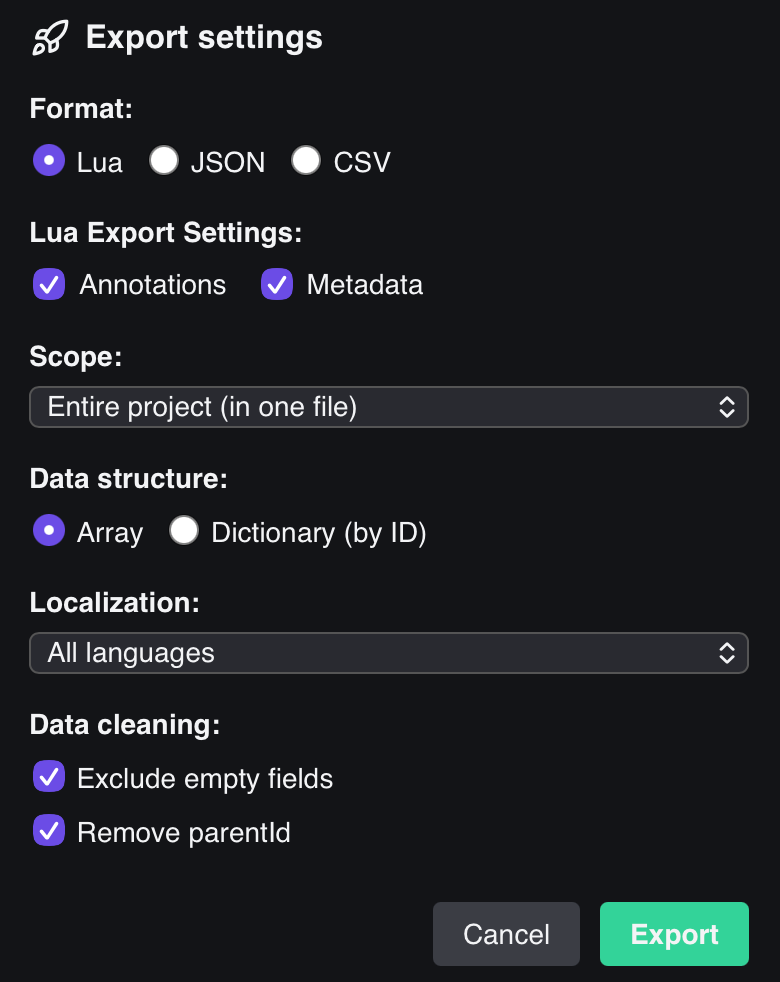
Экспорт Данных Exporting Data
Экспорт вызывается через кнопку Export в верхнем меню приложения. Доступны следующие форматы:
Exporting is initiated by clicking the Export button in the top menu of the app. The following formats are supported:
-
Lua Tables (.lua):Lua Tables (.lua):
При использовании плагина автоэкспорта Lua приложение генерирует готовые файлы
.luaв виде стандартных ассоциативных массивов (таблиц), возвращаемых черезreturn. Это наиболее производительный способ загрузки данных в Lua-совместимых движках, поскольку файлы компилируются и загружаются нативно, полностью исключая стадию ручного парсинга строк JSON во время выполнения игры.When using the Lua Auto-Export plugin, the app generates ready-to-use
.luafiles returning standard associative tables. This is the most performant way to load data into Lua-compatible engines, as files are compiled and loaded natively, bypassing raw JSON parsing at runtime. -
JSON (.json):JSON (.json):
Экспортирует всю базу данных в один компактный JSON-объект, либо генерирует отдельные JSON-файлы для каждой категории. Идея подходит для универсального импорта в Unity, Unreal Engine или Godot.
Exports the entire database into a single compact JSON object, or generates separate JSON files for each category. Perfect for importing into Unity, Unreal Engine, or Godot.
-
CSV (.csv):CSV (.csv):
Экспортирует выбранную категорию в формате плоской таблицы. Удобно для импорта в Google Sheets, Excel или для движков, оптимизированных под табличные структуры.
Exports the selected category as a flat table sheet. Useful for Google Sheets, Microsoft Excel, or engines optimized for table parsing.
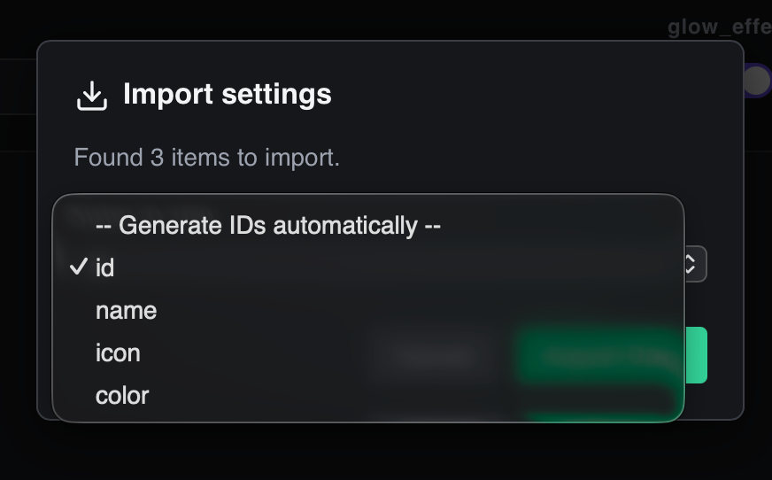
Импорт Данных Importing Data
Импорт в DataForge позволяет быстро загружать существующие таблицы баланса или структурированные списки. Процесс импорта полностью автоматизирован: вместо загрузки данных в пустую категорию, редактор **автоматически создает новую категорию** на основе структуры импортируемого файла.
DataForge's import utility allows for rapid uploading of balance sheets and item lists. The process is fully automated: rather than loading files into pre-existing empty schemas, the editor **automatically creates a new category** based on the structure of the imported file.
Как устроен процесс импорта: How the import workflow behaves:
-
Поддерживаемые форматы:Supported Formats:
Вы можете импортировать файлы трех типов:
You can import three file types:
- JSON (.json)JSON (.json) — массивы объектов или ассоциативные словари.object arrays or key-value dictionaries.
- CSV (.csv)CSV (.csv) — плоские таблицы с заголовками.flat tables with header columns.
- Lua (.lua)Lua (.lua) — файлы, возвращающие Lua-таблицы.files returning a Lua table.
-
Автоматическое создание категории:Automatic Category Creation:
Имя новой категории и её уникальный ID формируются на основе имени импортируемого файла (например, файл
items_db.csvсоздаст категориюitems_db). Если категория с таким именем уже существует в проекте, редактор автоматически добавит числовой суффикс (например,items_db_1). The new category name and its unique ID are derived from the imported filename (e.g.,items_db.csvcreates the categoryitems_db). If a category with the same ID already exists, a number suffix is appended (e.g.,items_db_1). -
Автогенерация схемы полей (Fields Schema):Auto-Generated Field Schema:
Вам не требуется настраивать структуру полей заранее. DataForge сканирует свойства импортируемых элементов и автоматически создает подходящие поля, определяя типы данных на лету:
You don't need to configure category fields beforehand. DataForge scans the properties of the imported items and dynamically resolves the correct field types on the fly:
- Числа распознаются как тип
Number.Numbers are resolved as typeNumber. - Флаги true/false — как тип
Boolean.Boolean flags (true/false) — asBoolean. - Массивы — как тип
Collection.Arrays — asCollection. - Остальные значения — как стандартные поля
String.Other values default toString.
- Числа распознаются как тип
-
Настройки парсинга (Import Dialog Settings):Import Dialog Parser Configuration:
Перед финальным импортом открывается модальное окно настроек:
Before finalizing the import, a configuration window opens:
- Разделитель (для CSV):Delimiter (for CSV): Возможность указать символ разделения колонок (запятая, точка с запятой и т.д.).Custom columns separator (comma, semicolon, etc.).
- Выбор ключевого поля ID:Primary Key Field: Вы можете указать, какое поле из файла использовать в качестве уникального `id` элемента (например, колонку с именем, артикулом или ключи словаря). Если выбрать вариант
none, то ID будут сгенерированы автоматически.Choose which property from the file to use as the unique item `id` (e.g., a name or article column, or dictionary keys). Selectingnoneautomatically generates secure IDs. - Префикс автогенерации ID:ID Prefix: Вы можете задать префикс для автогенерируемых ID (по умолчанию используется имя файла с подчеркиванием).Set a prefix string for auto-generated IDs (defaults to the filename with an underscore).
Разработка Плагинов (API) Plugin Development Guide
DataForge поддерживает динамическое расширение функционала с помощью плагинов, написанных на JavaScript. Под капотом приложение загружает код плагина и выполняет его в изолированном контексте: new Function("DataForge", "React", code), передавая туда мост к API программы и библиотеку React.
DataForge supports runtime extensibility through custom JavaScript plugins. Under the hood, the application compiles and evaluates the plugin code within a sandbox: new Function("DataForge", "React", code), passing the native API namespace and React.
.js должны быть помещены в папку plugins/ в корневой директории вашего проекта. Редактор автоматически сканирует эту папку при запуске или при нажатии кнопки перезагрузки плагинов.
Plugin files ending with .js must be placed inside the plugins/ directory in your project root. The editor automatically scans this folder during initialization or when you trigger a plugins reload.
Описание метаданных JSDoc JSDoc Metadata Configuration Header
Каждый файл плагина должен начинаться со специального JSDoc-комментария. Редактор считывает его заголовки для отображения в менеджере плагинов и регистрации типов полей:
Each plugin file must begin with a structured JSDoc comment. The editor parses these headers to register metadata and field configurations:
/**
* @name Defold Atlas Parser
* @description Parses .atlas files to choose sprites
* @version 1.0.0
* @author GameDev Team
* @fields defold_sprite
*/- @name:@name: Уникальное имя плагина.Human-readable name of the plugin.
- @description:@description: Краткое описание назначения плагина.Brief summary of what the plugin does.
- @version:@version: Текущая версия плагина.Current semantic version of the plugin.
- @author:@author: Автор или команда разработки.Name of the author/team.
- @fields:@fields: Список регистрируемых типов полей через запятую (например,
defold_sprite, range_slider).Comma-separated tags of custom fields this plugin registers (e.g.defold_sprite, range_slider).
Методы API DataForge DataForge API Bridge Methods
Плагину передается глобальный объект DataForge, предоставляющий следующие методы:
Plugins are invoked with a global DataForge bridge namespace containing these functions:
1. Регистрация кастомного типа поля 1. Register a Custom Field Type
DataForge.registerFieldType(pluginId, {
id: "defold_sprite",
name: "Defold Sprite Selector",
icon: "Image",
renderConfig: ({ config, onChange }) => { ... },
renderCell: ({ value, onChange, field, rowId, projectSettings }) => { ... }
});2. Добавление настроек в проект 2. Register Custom Plugin Settings
Вы можете добавить переменные, настраиваемые пользователем в общих настройках проекта:
You can register parameters that users customize via the project settings pane:
DataForge.registerSetting("defold_atlas_parser", {
id: "atlas_path",
name: "Defold Atlas Directory",
description: "Directory containing .atlas files",
type: "directory",
default: ""
});3. Системные функции (DataForge.Tauri) 3. Native OS Functions (DataForge.Tauri)
Для обхода ограничений безопасности браузера плагины используют Tauri-мост для чтения файлов и открытия проводника:
To bypass standard sandbox constraints, plugins call native Tauri file system methods:
DataForge.Tauri.readTextFile(path): Считывает текстовое содержимое локального файла. Возвращает Promise со строкой.Reads text contents of a file on disk. Returns a Promise resolving to a string.DataForge.Tauri.open(options): Открывает диалоговое окно ОС для выбора файла или папки.Opens native OS dialogue to select a file/directory.DataForge.Tauri.convertFileSrc(path): Превращает локальный путь в URL-адрес для отображения изображений в теге<img src="..." />.Converts a local absolute filepath into a secure URL to render inside an<img src="..." />element.
Пример: Плагин парсинга Атласов Defold Real-World Walkthrough: Defold Atlas Parser Plugin
Ниже представлен реальный рабочий код плагина, который ищет файлы атласов (.atlas) в игровой папке, парсит список спрайтов и выводит выпадающий список для быстрого выбора кадра анимации в ячейке:
Here is a functional plugin implementation that scans for Defold .atlas files in a game directory, parses animation frame labels, and renders a dropdown selector inside item editing cards:
/**
* @name Defold Atlas Sprite Selector
* @description Allows choosing a sprite image frame from local Defold .atlas assets.
* @version 1.0.2
* @author Defold community
* @fields defold_sprite
*/
(function(DataForge, React) {
const pluginId = "defold_atlas_sprite_selector";
// Register settings
DataForge.registerSetting(pluginId, {
id: "atlas_dir",
name: "Atlas Directory",
description: "Absolute path to your Defold graphics folder",
type: "directory",
default: ""
});
// Helper: parse sprites from Defold .atlas format
function parseAtlasSprites(content) {
const list = [];
const regex = /animations\s*\{[\s\S]*?id:\s*"([^"]+)"[\s\S]*?\}/g;
let match;
while ((match = regex.exec(content)) !== null) {
list.push(match[1]);
}
return list;
}
// Register custom field type
DataForge.registerFieldType(pluginId, {
id: "defold_sprite",
name: "Defold Sprite Frame",
icon: "Grid",
renderConfig: ({ config, onChange }) => {
return React.createElement("div", null,
React.createElement("label", null, "Target Atlas File Name (.atlas):"),
React.createElement("input", {
type: "text",
className: "settings-input",
value: config.atlas_name || "",
placeholder: "hero.atlas",
onChange: (e) => onChange({ ...config, atlas_name: e.target.value })
})
);
},
renderCell: ({ value, onChange, field, projectSettings }) => {
const [sprites, setSprites] = React.useState([]);
const atlasDir = projectSettings[pluginId + "_atlas_dir"];
const atlasName = field.config?.atlas_name;
React.useEffect(() => {
if (!atlasDir || !atlasName) return;
const fullPath = atlasDir + "/" + atlasName;
DataForge.Tauri.readTextFile(fullPath)
.then(content => {
setSprites(parseAtlasSprites(content));
})
.catch(err => console.error("Error loading atlas:", err));
}, [atlasDir, atlasName]);
return React.createElement("select", {
value: value || "",
className: "cell-select",
onChange: (e) => onChange(e.target.value)
},
React.createElement("option", { value: "" }, "-- Select Sprite --"),
sprites.map(s => React.createElement("option", { key: s, value: s }, s))
);
}
});
})(DataForge, React);Горячие Клавиши Keyboard Shortcuts Reference
Использование горячих клавиш позволяет опытным геймдизайнерам и разработчикам ускорить работу с балансом и базами данных в разы, не отвлекаясь на мышь.
Utilizing global keyboard shortcuts enables game designers to accelerate content data entry, keeping their hands on the keyboard and skipping mouse clicks.
| Сочетание КлавишKey Combination | ДействиеAction / Command | КонтекстContext Scope |
|---|---|---|
Cmd + S / Ctrl + S |
Сохранить проект на дискSave active workspace to disk | ГлобальноеGlobal App State |
Cmd + F / Ctrl + F |
Фокус на поле поиска / Живой фильтрFocus explorer search input field | ГлобальноеGlobal App State |
Cmd + N / Ctrl + N |
Создать новый элемент в активной категорииCreate a new item in active category | Списки элементовItem Explorer |
Cmd + Z / Ctrl + Z |
Отменить последнее действие (Undo)Revert previous change (Undo) | РедактированиеHistory Buffer |
Cmd + Y / Ctrl + Y |
Повторить отмененное действие (Redo)Reapply change (Redo) | РедактированиеHistory Buffer |
Cmd + E / Ctrl + E |
Открыть настройки экспорта данныхOpen data export configuration panel | ГлобальноеGlobal App State |
Cmd + I / Ctrl + I |
Открыть настройки импорта данныхOpen data import selection window | ГлобальноеGlobal App State |
ArrowUp / ArrowDown |
Перемещение фокуса по деревуNavigate highlight in sidebar tree view | Боковое меню (вне инпутов)Sidebar (when not typing) |
Enter |
Выбрать элемент или сохранить переименованиеSelect element or apply inline renaming | Боковое меню / Поля переименованияSidebar / Title edit box |
Escape |
Отменить inline-переименование категории или элементаDiscard inline rename modifications | Активное поле inline-редактированияEditing title input cell |